| Marginal → X-Plane Scenery → Tools → AutoGate |
This kit allows X-Plane scenery designers to add animated jetway and docking guidance systems (DGS) to scenery packages. Two types of jetway and four types of DGS are included.
The jetway animates to “dock” with the plane's main door when the pilot engages the parking brake and shuts down the plane's engines with the plane within ½m of the correct stopping position. The DGS guides the pilot to the correct stopping position.
An example scenery package built using this kit is available. Please see the notes below if you're upgrading from an earlier of this kit.
The jetways and DGSs are standard X-Plane scenery objects that you place in your scenery package using OverlayEditor (version 2.48 or later recommended) or WED (version 1.1r1 or later recommended). They are animated by X-Plane custom datarefs which are supplied by a plugin.
The plugin needs to know the type of aircraft that the user is piloting and the location of its main boarding door. The plugin reads this information from the “ICAO code” and “boarding door location” values in the ACF file of the aircraft that the user is piloting. These values can be edited on the Standard → Viewpoint screen in Plane-Maker. If the ACF file does not have this information correctly recorded then the DGS will display “ID FAIL” and the jetway will remain in the retracted position.
The system is designed so that it imposes no more load on X-Plane than normal “static” scenery objects unless the user's viewpoint is within 1000m of a jetway or 500m of a DGS, in which case the load remains very modest. If the plugin is not installed then the DGS and jetway objects will behave as if they were normal “static” scenery objects.
Download and install the AutoGate plugin. Installation instructions are in the file ReadMe.txt included.
Please do not re-distribute the plugin with your scenery package; ask your users to download it from http://marginal.org.uk/x-planescenery/AutoGate.zip instead. This ensures that they have the latest version. (Future versions of the plugin may support more jetways and/or DGSs, but will remain backwards-compatible).
Two types of animated jetway are supplied:
| Glass jetway | Steel jetway | |
|---|---|---|
| 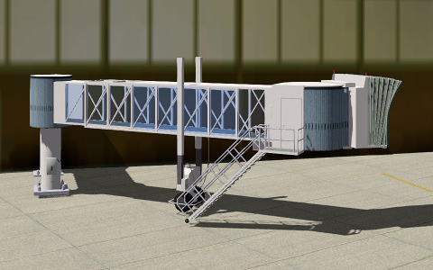 | 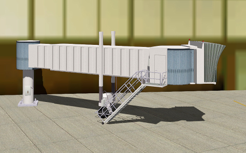 |
In four orientations:
| Default | Straight | Perpendicular | Short | |
|---|---|---|---|---|
| 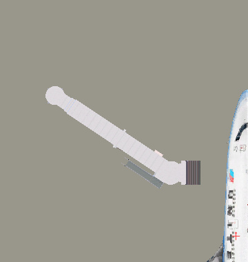 | 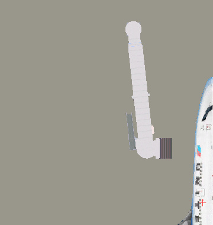 | 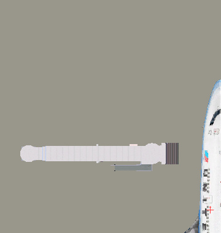 | |
Various versions of these jetway objects are supplied in this kit's Jetways-Glass and Jetways-Steel folders, named AutoGate-lm-glass.obj, AutoGate-straight-lm-glass.obj, AutoGate-perpendicular-lm-glass.obj, AutoGate-short-lm-glass.obj and AutoGate-lm-steel.obj, AutoGate-straight-lm-steel.obj, AutoGate-perpendicular-lm-steel.obj, AutoGate-short-lm-steel.obj. These differ in the (approximate) length l of the jetway in its retracted position. You don't need to distribute all of these objects with your scenery package - only the ones that you use.
To place an animated jetway into your scenery package:
AutoGate-*.obj jetway objects from the Jetways-Glass and/or Jetways-Steel folders into your scenery package:
Jetways-Glass or Jetways-Steel folder and drop onto OverlayEditor's list of objects.AutoGate2.dds + AutoGate2_LIT.dds from the Jetways-Glass or Jetways-Steel folder into your scenery package folder.Jetways-Glass and/or Jetways-Steel folder(s) into your scenery package (but don't forget to strip out unused objects before distributing, e.g. using the X-Publish tool).lib/airport/aircraft/heavy_metal/747_United.obj from X-Plane 10's built-in library, but if you're designing for a regional airport or terminal you should use a smaller aircraft, e.g. opensceneryx/aircraft/jets/hevay/a320.obj.| OverlayEditor: Select the jetway object and press C. The red cursor jumps to the jetway object's origin: |
WED: Select the jetway object using the Vertex tool. The yellow cursor shows the jetway object's origin: |
|
| 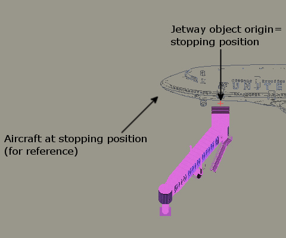 | 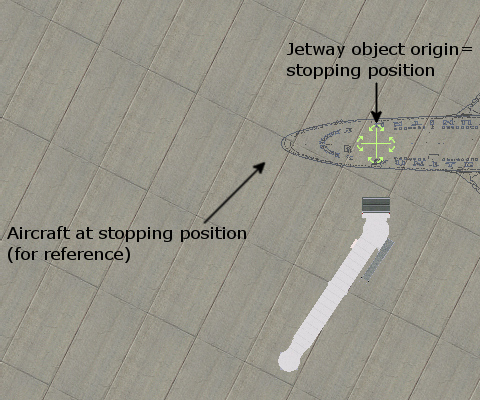 |
StaticGate-*.obj jetway objects described below. (This limitation exists in part because the X-Plane ACF file only specifies one boarding door location). The example scenery package contains a gate of this configuration.
Use of a DGS is optional - the animated jetways work fine without it - but the pilot will find it difficult to stop the aircraft at the correct position if you don't include a DGS.
Four types of DGS are supplied:
| Safegate® inductive-loop DGS | Safedock®2S advanced DGS | Safedock®T2 advanced DGS | Human marshaller | |
|---|---|---|---|---|
| 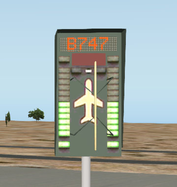 | 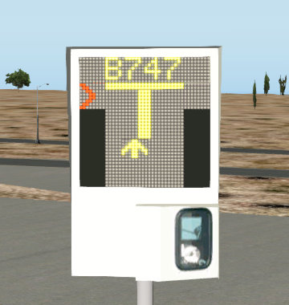 | 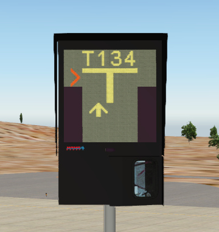 | 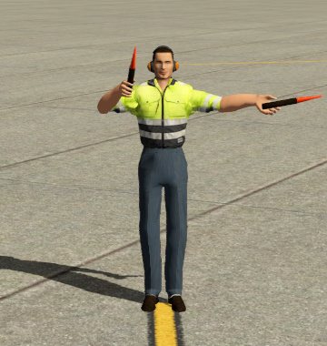 |
Various versions of the DGS objects are supplied in this kit's DGSs-Safegate, DGSs-Safedock2S, DGSs-SafedockT2 and DGSs-Marshaller folders, named Safegate-hm[-pole].obj, Safedock2S-hm[-pole].obj, SafedockT2-hm[-pole].obj and Marshaller.obj. These differ in the height h of the DGS above the ground, and whether the DGS is mounted on a pole. Gates intended for heavies will need the taller DGSs. You don't need to distribute all of these objects with your scenery package - only the ones that you use.
To add a DGS to your gate:
DGSs-Safegate, DGSs-Safedock2S, DGSs-SafedockT2 and/or DGSs-Marshaller folder into your scenery package:
DGSs-Safegate, DGSs-Safedock2S, DGSs-SafedockT2 or DGSs-Marshaller folder and drop onto OverlayEditor's list of objects.Safegate.dds + Safegate_LIT.dds, Safedock2S.dds + Safedock2S_LIT.dds, SafedockT2.dds + SafedockT2_LIT.dds or Marshaller.dds + Marshaller_LIT.dds) from the DGSs-Safegate, DGSs-Safedock2S, DGSs-SafedockT2 or DGSs-Marshaller folder into your scenery package folder.DGSs-Safegate, DGSs-Safedock2S, DGSs-SafedockT2 and/or DGSs-Marshaller folder(s) into your scenery package (but don't forget to strip out unused objects before distributing, e.g. using the X-Publish tool).| 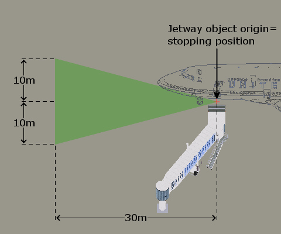 | 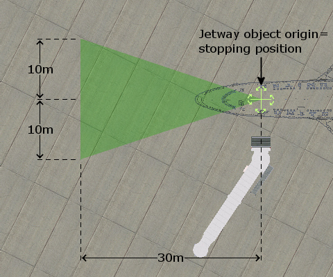 |
greenzone.obj object in the Helpers folder to help you with DGS positioning - place this object with the same origin and heading as the jetway object.You can also place a DGS without an accompanying animated jetway, e.g. at an apron parking stand.
StoppingPoint.obj object supplied in this in this kit's Standalone folder instead:
| 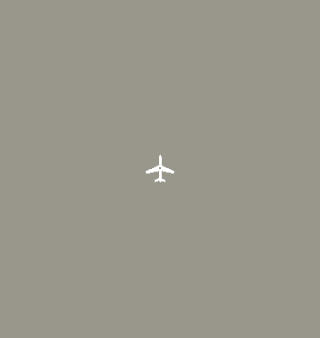 |
StoppingPoint.obj object with the position and heading that you want the user's aircraft to have when it's stopped at the stand that you're modelling.StoppingPoint.obj object's origin and heading.Various static objects are supplied in this kit's Jetways-Glass and Jetways-Steel folders:
StaticGate-lm-glass.obj, StaticGate-perpendicular-lm-glass.obj, StaticGate-short-lm-glass.obj, StaticGate-straight-lm-glass.obj, StaticGate-lm-steel.obj, StaticGate-perpendicular-lm-steel.obj, StaticGate-short-lm-steel.obj and StaticGate-straight-lm-steel.objJetwayExt-lm-glass.obj and JetwayExt-lm-steel.objJetwayCon-lm-glass.obj and JetwayCon-lm-steel.objSimilarly, various static DGS objects are supplied in this kit's DGSs-Safegate, DGSs-Safedock2S, DGSs-SafedockT2 and DGSs-Marshaller folders that can be used when a static aircraft is parked at a gate.
You don't need to distribute all of these objects with your scenery package - only the ones that you use.
The static and animated glass and steel jetway objects share common texture files AutoGate2.dds and AutoGate2_LIT.dds in the Jetways-Glass and Jetways-Steel folders. You can edit or replace these files in your scenery package folder. These files are very modestly sized; consider doubling their size if you want to add more detail. The file PaintKit.png in the Helpers folder describes how the textures in these files map to the jetway objects.
You can edit the object files in a text editor to change the name of the texture files specified in the TEXTURE and TEXTURE_LIT statements, and save the object with a different filename. This allows you to have a mix of differently textured jetways. (Note that the spacing rules described above still apply irrespective of the objects' filenames).
The static, animated and extension/connector glass jetways are drawn in “layer group” objects+4, objects+3 and objects+2 respectively, so that other scenery objects (which are normally drawn in layer group objects+0) can be viewed through the glass windows. If you have a number of glass objects at a gate you may need to change the ATTR_layer_group objects n statements in some of the object files to change their relative drawing order; i.e. so that objects further from the terminal building are drawn later than objects closer to the terminal building.
The supplied DGSs are not designed to be customisable. However the plugin publishes various datarefs that you can use to construct your own DGS. Contact the author if you would like more information.
This kit and the associated AutoGate plugin require X-Plane version 9 or later. If you're designing a scenery package for X-Plane 8 then you should stick with a previous version of this kit and of the AutoGate plugin.
The DGS objects in the DGSs-Safedock2S and DGSs-Safegate folders are drop-in replacements for older objects of the same name, but use higher quality DDS textures. Use OverlayEditor's Import button, or use Finder or Explorer to replace your existing DGS objects and textures. Delete the old PNG textures Safedock2S.png, Safedock2S_LIT.png, Safegate.png and Safegate_LIT.png from your scenery package folder.
There are no direct replacement for the old AutoGate.obj and AutoGate-angled.obj objects, but:
Jetways-Steel/AutoGate-straight-20m-steel.obj plus Jetways-Steel/JetwayExt-10m-steel.obj take up roughly the same space as the old AutoGate.obj.Jetways-Steel/AutoGate-20m-steel.obj plus Jetways-Steel/JetwayExt-10m-steel.obj take up roughly the same space as the old AutoGate-angled.obj.You can mix old and new objects in your scenery package. (Note that the spacing rules described above still apply irrespective of whether objects are old or new).
If you'd like your existing scenery package to take advantage of the latest objects, and you haven't renamed or customised any of the supplied files, then just overwrite any existing files in your scenery package with the latest files from this kit of the same name. You will need to replace the textures as well as the objects. (Note that the different types of DGSs and jetways were split out into different folders in version 1.60 of this kit, so you may have to look in more than one folder to find the replacement files).
If you've renamed and/or customised any of the supplied objects then may want to be more selective in replacing files, and/or re-apply your customisations. This is the list of what has changed and when:
AutoGate-dm-glass, JetwayCon-dm-glass, JetwayExt-dm-glass and StaticGate-dm-glass objects the Jetways-Glass folder were re-modelled in version 1.40 to add night lighting.AutoGate2.dds texture in that folder.AutoGate-dm-* and AutoGate-straight-dm-* objects in the Jetways-Glass and Jetways-Steel folders were re-modelled in version 1.50 to add a ground-level beacon.AutoGate2.dds and AutoGate2_LIT.dds textures in those folders were unchanged).AutoGate-perpendicular-* objects in the Jetways-Glass and Jetways-Steel folders were re-modelled in version 1.60 to correct their animation.AutoGate2.dds and AutoGate2_LIT.dds textures in those folders were unchanged).Safedock2S-* objects in the DGSs-Safedock2S folder were re-modelled in version 1.60 to display arbitrary aircraft ICAO designations.Safedock2S.dds and Safedock2S_LIT.dds textures in that folder.SA-* stand-alone DGS objects were removed in version 1.70. Existing SA-* objects in your scenery package will continue to work, but you should start creating stand-alone DGSs using the method described above.“X-Plane” is a registered trademark of Laminar Research.
“Safedock” and “Safegate” are registered trademarks of Safegate Group. Safegate Group is not associated with and does not endorse this scenery kit.
Marshaller figure courtesy of Mr 3D.
This kit is licensed under the Creative Commons Attribution license. In short, you can use any part of this kit (including the 3D objects and their textures) in original or modified form in a free or commerical scenery package, but you must give the author credit.
The author would appreciate a courtesy copy of any commercial scenery that you make using this kit, but you are under no obligation.
The associated plugin is licensed under the GNU LGPL v2.1 license.
Version 1.71 © 2006-2016 Jonathan Harris
 |